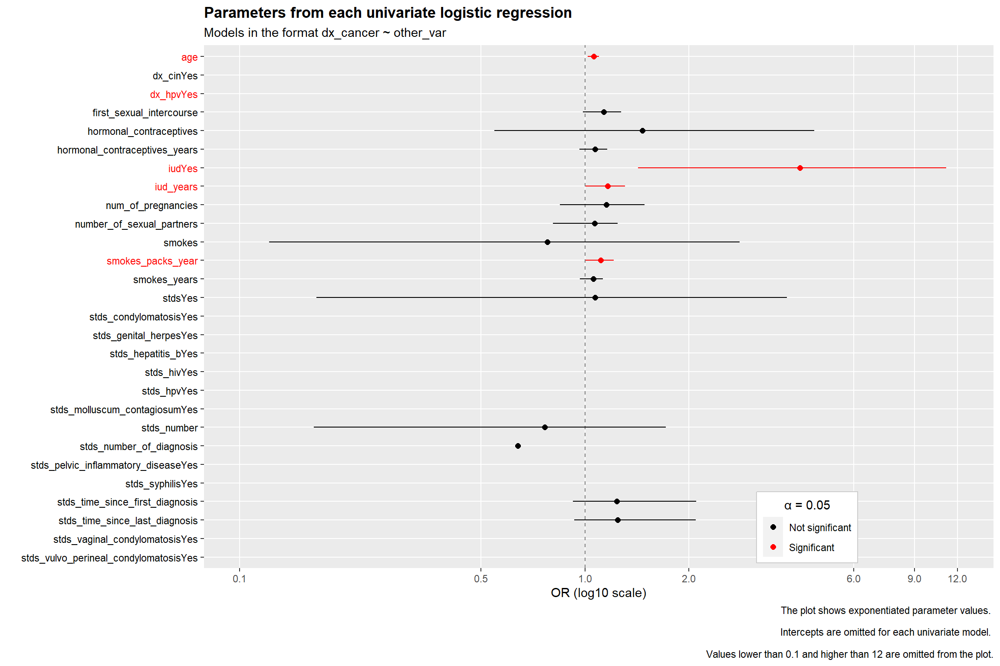
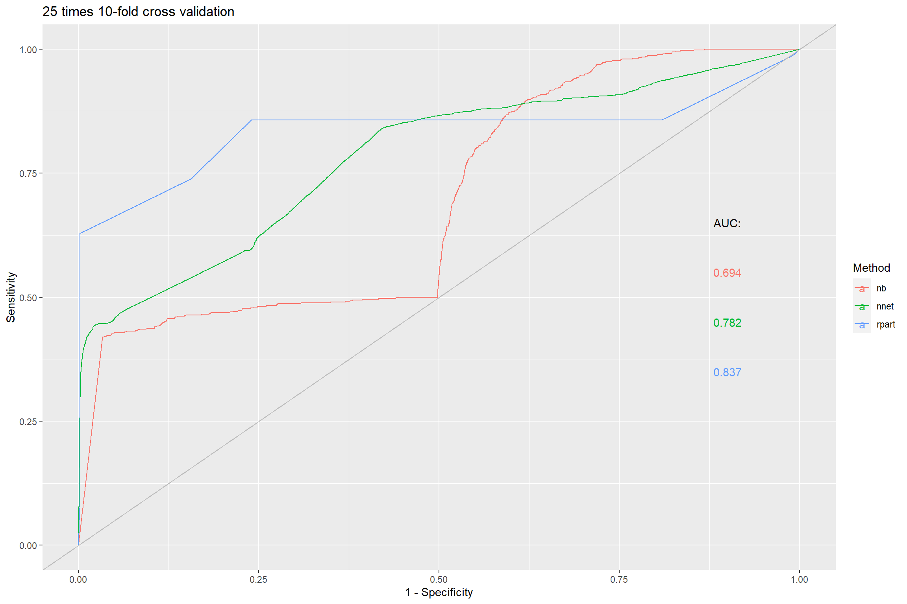
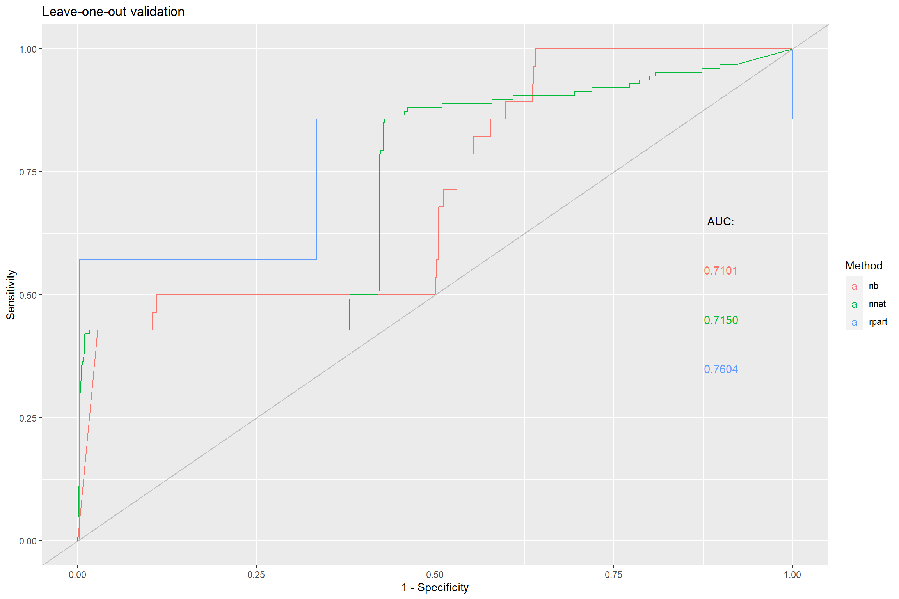

# Importing the necessary packages
library(rio) # Import function for multiple file formats
library(tidyverse) # Data wrangling and visualization
library(janitor) # Data examining and cleaning functions
library(summarytools) # Descriptive statistics
library(kableExtra) # Display and format html tables
library(broom) # Functions to tidy outputs
library(tidymodels) # Modeling and statistical analysis that share the underlying philosophy of the tidyverse.
library(dotwhisker) # Dot-and-Whisker Plots of Regression Results
library(MASS) # Used for the stepAIC function for automatic variable selection
library(caret) # For Classification and Regression Training
library(pROC) # To create ROC curvesHEADS 22-26 

ANALYZE - Final Assignment
Risk factors for cervical cancer: a case study
#Immport the dataset directly from the website
df <- rio::import(file = "https://archive.ics.uci.edu/ml/machine-learning-databases/00383/risk_factors_cervical_cancer.csv",
setclass = "tibble") %>%
janitor::clean_names()
#Pre-process the dataset
df <- df %>%
mutate(across(everything(), as.numeric)) %>% #forces "?" to NA
mutate(across(c(10, 12, 14:25, 29:36), ~ factor(., levels = c(0,1), labels = c("No","Yes")))) %>% #Convert the appropriate columns to factor
#mutate(across(c(6, 7, 9, 11), as.numeric)) %>% #Convert the appropriate columns to numeric
mutate(across(c(1:5, 8, 13, 26:28), as.integer)) %>% #Convert the appropriate columns to integer
rename_all(.funs = ~ str_replace_all(names(df),"st_ds","stds"))
str(df)tibble [858 x 36] (S3: tbl_df/tbl/data.frame)
$ age : int [1:858] 18 15 34 52 46 42 51 26 45 44 ...
$ number_of_sexual_partners : int [1:858] 4 1 1 5 3 3 3 1 1 3 ...
$ first_sexual_intercourse : int [1:858] 15 14 NA 16 21 23 17 26 20 15 ...
$ num_of_pregnancies : int [1:858] 1 1 1 4 4 2 6 3 5 NA ...
$ smokes : int [1:858] 0 0 0 1 0 0 1 0 0 1 ...
$ smokes_years : num [1:858] 0 0 0 37 0 ...
$ smokes_packs_year : num [1:858] 0 0 0 37 0 0 3.4 0 0 2.8 ...
$ hormonal_contraceptives : int [1:858] 0 0 0 1 1 0 0 1 0 0 ...
$ hormonal_contraceptives_years : num [1:858] 0 0 0 3 15 0 0 2 0 0 ...
$ iud : Factor w/ 2 levels "No","Yes": 1 1 1 1 1 1 2 2 1 NA ...
$ iud_years : num [1:858] 0 0 0 0 0 0 7 7 0 NA ...
$ stds : Factor w/ 2 levels "No","Yes": 1 1 1 1 1 1 1 1 1 1 ...
$ stds_number : int [1:858] 0 0 0 0 0 0 0 0 0 0 ...
$ stds_condylomatosis : Factor w/ 2 levels "No","Yes": 1 1 1 1 1 1 1 1 1 1 ...
$ stds_cervical_condylomatosis : Factor w/ 2 levels "No","Yes": 1 1 1 1 1 1 1 1 1 1 ...
$ stds_vaginal_condylomatosis : Factor w/ 2 levels "No","Yes": 1 1 1 1 1 1 1 1 1 1 ...
$ stds_vulvo_perineal_condylomatosis: Factor w/ 2 levels "No","Yes": 1 1 1 1 1 1 1 1 1 1 ...
$ stds_syphilis : Factor w/ 2 levels "No","Yes": 1 1 1 1 1 1 1 1 1 1 ...
$ stds_pelvic_inflammatory_disease : Factor w/ 2 levels "No","Yes": 1 1 1 1 1 1 1 1 1 1 ...
$ stds_genital_herpes : Factor w/ 2 levels "No","Yes": 1 1 1 1 1 1 1 1 1 1 ...
$ stds_molluscum_contagiosum : Factor w/ 2 levels "No","Yes": 1 1 1 1 1 1 1 1 1 1 ...
$ stds_aids : Factor w/ 2 levels "No","Yes": 1 1 1 1 1 1 1 1 1 1 ...
$ stds_hiv : Factor w/ 2 levels "No","Yes": 1 1 1 1 1 1 1 1 1 1 ...
$ stds_hepatitis_b : Factor w/ 2 levels "No","Yes": 1 1 1 1 1 1 1 1 1 1 ...
$ stds_hpv : Factor w/ 2 levels "No","Yes": 1 1 1 1 1 1 1 1 1 1 ...
$ stds_number_of_diagnosis : int [1:858] 0 0 0 0 0 0 0 0 0 0 ...
$ stds_time_since_first_diagnosis : int [1:858] NA NA NA NA NA NA NA NA NA NA ...
$ stds_time_since_last_diagnosis : int [1:858] NA NA NA NA NA NA NA NA NA NA ...
$ dx_cancer : Factor w/ 2 levels "No","Yes": 1 1 1 2 1 1 1 1 2 1 ...
$ dx_cin : Factor w/ 2 levels "No","Yes": 1 1 1 1 1 1 1 1 1 1 ...
$ dx_hpv : Factor w/ 2 levels "No","Yes": 1 1 1 2 1 1 1 1 2 1 ...
$ dx : Factor w/ 2 levels "No","Yes": 1 1 1 1 1 1 1 1 2 1 ...
$ hinselmann : Factor w/ 2 levels "No","Yes": 1 1 1 1 1 1 2 1 1 1 ...
$ schiller : Factor w/ 2 levels "No","Yes": 1 1 1 1 1 1 2 1 1 1 ...
$ citology : Factor w/ 2 levels "No","Yes": 1 1 1 1 1 1 1 1 1 1 ...
$ biopsy : Factor w/ 2 levels "No","Yes": 1 1 1 1 1 1 2 1 1 1 ...summarytools::dfSummary(df) %>%
print(method = "render")Data Frame Summary
summarytools::dfSummary
Dimensions: 858 x 36Duplicates: 23
| No | Variable | Stats / Values | Freqs (% of Valid) | Graph | Valid | Missing | ||||||||||||||||||||||||||||||||||
|---|---|---|---|---|---|---|---|---|---|---|---|---|---|---|---|---|---|---|---|---|---|---|---|---|---|---|---|---|---|---|---|---|---|---|---|---|---|---|---|---|
| 1 | age [integer] |
|
44 distinct values |  |
858 (100.0%) | 0 (0.0%) | ||||||||||||||||||||||||||||||||||
| 2 | number_of_sexual_partners [integer] |
|
12 distinct values |  |
832 (97.0%) | 26 (3.0%) | ||||||||||||||||||||||||||||||||||
| 3 | first_sexual_intercourse [integer] |
|
21 distinct values |  |
851 (99.2%) | 7 (0.8%) | ||||||||||||||||||||||||||||||||||
| 4 | num_of_pregnancies [integer] |
|
11 distinct values |  |
802 (93.5%) | 56 (6.5%) | ||||||||||||||||||||||||||||||||||
| 5 | smokes [integer] |
|
|
 |
845 (98.5%) | 13 (1.5%) | ||||||||||||||||||||||||||||||||||
| 6 | smokes_years [numeric] |
|
30 distinct values |  |
845 (98.5%) | 13 (1.5%) | ||||||||||||||||||||||||||||||||||
| 7 | smokes_packs_year [numeric] |
|
62 distinct values |  |
845 (98.5%) | 13 (1.5%) | ||||||||||||||||||||||||||||||||||
| 8 | hormonal_contraceptives [integer] |
|
|
 |
750 (87.4%) | 108 (12.6%) | ||||||||||||||||||||||||||||||||||
| 9 | hormonal_contraceptives_years [numeric] |
|
40 distinct values |  |
750 (87.4%) | 108 (12.6%) | ||||||||||||||||||||||||||||||||||
| 10 | iud [factor] |
|
|
 |
741 (86.4%) | 117 (13.6%) | ||||||||||||||||||||||||||||||||||
| 11 | iud_years [numeric] |
|
26 distinct values |  |
741 (86.4%) | 117 (13.6%) | ||||||||||||||||||||||||||||||||||
| 12 | stds [factor] |
|
|
 |
753 (87.8%) | 105 (12.2%) | ||||||||||||||||||||||||||||||||||
| 13 | stds_number [integer] |
|
|
 |
753 (87.8%) | 105 (12.2%) | ||||||||||||||||||||||||||||||||||
| 14 | stds_condylomatosis [factor] |
|
|
 |
753 (87.8%) | 105 (12.2%) | ||||||||||||||||||||||||||||||||||
| 15 | stds_cervical_condylomatosis [factor] |
|
|
 |
753 (87.8%) | 105 (12.2%) | ||||||||||||||||||||||||||||||||||
| 16 | stds_vaginal_condylomatosis [factor] |
|
|
 |
753 (87.8%) | 105 (12.2%) | ||||||||||||||||||||||||||||||||||
| 17 | stds_vulvo_perineal_condylomatosis [factor] |
|
|
 |
753 (87.8%) | 105 (12.2%) | ||||||||||||||||||||||||||||||||||
| 18 | stds_syphilis [factor] |
|
|
 |
753 (87.8%) | 105 (12.2%) | ||||||||||||||||||||||||||||||||||
| 19 | stds_pelvic_inflammatory_disease [factor] |
|
|
|
753 (87.8%) | 105 (12.2%) | ||||||||||||||||||||||||||||||||||
| 20 | stds_genital_herpes [factor] |
|
|
|
753 (87.8%) | 105 (12.2%) | ||||||||||||||||||||||||||||||||||
| 21 | stds_molluscum_contagiosum [factor] |
|
|
|
753 (87.8%) | 105 (12.2%) | ||||||||||||||||||||||||||||||||||
| 22 | stds_aids [factor] |
|
|
|
753 (87.8%) | 105 (12.2%) | ||||||||||||||||||||||||||||||||||
| 23 | stds_hiv [factor] |
|
|
|
753 (87.8%) | 105 (12.2%) | ||||||||||||||||||||||||||||||||||
| 24 | stds_hepatitis_b [factor] |
|
|
|
753 (87.8%) | 105 (12.2%) | ||||||||||||||||||||||||||||||||||
| 25 | stds_hpv [factor] |
|
|
|
753 (87.8%) | 105 (12.2%) | ||||||||||||||||||||||||||||||||||
| 26 | stds_number_of_diagnosis [integer] |
|
|
 |
858 (100.0%) | 0 (0.0%) | ||||||||||||||||||||||||||||||||||
| 27 | stds_time_since_first_diagnosis [integer] |
|
18 distinct values |  |
71 (8.3%) | 787 (91.7%) | ||||||||||||||||||||||||||||||||||
| 28 | stds_time_since_last_diagnosis [integer] |
|
18 distinct values |  |
71 (8.3%) | 787 (91.7%) | ||||||||||||||||||||||||||||||||||
| 29 | dx_cancer [factor] |
|
|
|
858 (100.0%) | 0 (0.0%) | ||||||||||||||||||||||||||||||||||
| 30 | dx_cin [factor] |
|
|
|
858 (100.0%) | 0 (0.0%) | ||||||||||||||||||||||||||||||||||
| 31 | dx_hpv [factor] |
|
|
|
858 (100.0%) | 0 (0.0%) | ||||||||||||||||||||||||||||||||||
| 32 | dx [factor] |
|
|
 |
858 (100.0%) | 0 (0.0%) | ||||||||||||||||||||||||||||||||||
| 33 | hinselmann [factor] |
|
|
 |
858 (100.0%) | 0 (0.0%) | ||||||||||||||||||||||||||||||||||
| 34 | schiller [factor] |
|
|
 |
858 (100.0%) | 0 (0.0%) | ||||||||||||||||||||||||||||||||||
| 35 | citology [factor] |
|
|
 |
858 (100.0%) | 0 (0.0%) | ||||||||||||||||||||||||||||||||||
| 36 | biopsy [factor] |
|
|
|
858 (100.0%) | 0 (0.0%) |
Generated by summarytools 1.0.1 (R version 4.1.3)
2022-12-29
#TODO: some text interpreting descriptive analytics
## dx_cancer will be our target variable. Other target variables will be discarded.
## stds_cervical_condylomatosis and stds_aids only have one level (no positive cases)#In subsequent analyses our outcome variable will be "dx_cancer"
outcome_var <- "dx_cancer"
# Analysis to study association between a cancer diagnosis and each other variable, one at a time
# Model of the type dx_cancer ~ other_var
#* We created a function that, given a dataset, an outcome variable and other variable in the dataset,
#* returns the appropriate logistic regression. Accepts the optional boolean argument "exponentiate",
#* that allows the user to choose between exponentiated parameters or not.
# Function output includes the terms of the regression, point estimate, std.error, test statistic, p.value, confidence interval and variables used in the model. If some error occurs, NA is returned.
fit_logistic_model <- function(dataset, outcome_var, other_var, exponentiate = TRUE) {
out <- tryCatch(
{
#get dataset name passed as string
dataset <- get(dataset)
#fit the model
parsnip::fit(logistic_reg(), as.formula(paste(outcome_var, " ~ ", other_var)), data = dataset) %>%
broom::tidy(exponentiate = exponentiate, conf.int = T) %>%
mutate(outcome_var = outcome_var,
other_var = other_var)
},
error = function(cond) {
return(tibble('term'=NA, 'estimate'=NA, 'std.error'=NA, 'statistic'=NA, 'p.value'=NA, 'conf.low'=NA, 'conf.high'=NA,
'outcome_var' = outcome_var, 'other_var' = other_var))
}
)
return(out)
}
# Apply the created function to a list that contains all the variables in the dataset (not including target variables other than the desired one)
logistic_results <- pmap_dfr(.l = as.list(crossing("df",
outcome_var,
names(df[c(1:28,30:31)]))),
.f = ~ fit_logistic_model(dataset = ..1,
outcome_var = ..2,
other_var = ..3,
exponentiate = T))
# Add a variable with values "sig" or "not sig", depending on whether the confidence interval includes the value 1 (using the exponentiated values of the parameters)
logistic_results2 <- logistic_results %>%
mutate(sig = ifelse(p.value < 0.05, "sig","not sig")) %>%
filter(term != "(Intercept)")
#INTERPRETATION:
# Variables significantly associated with dx_cancer are:
## age, dx_hpv, iud, iud_years, smokes_packs_year
## Older age, having HPV, having IUD, using IUD for longer and higher intensity of smoking are associated with higher odds of having a cancer diagnosis.
# Dot and whisker plot of all univariate models, condensed in a single plot
## Some CIs are absurdly large, so in this step we process that data to hide those variables
log_res_plot <- logistic_results2 %>%
#mutate(conf.high = ifelse(conf.high > 6 | is.na(conf.high), 6, conf.high)) %>% # processing to show large CIs as -20 to 20, just for the plot
# mutate(conf.low = ifelse(conf.low < 0 | is.na(conf.low), 0.1, conf.low)) %>%
# filter(conf.high <= 6 & conf.low >= 0.1) %>%
mutate(sig = ifelse(sig == "sig", "red","black"))
#Plot to show the OR and CI (dot and whisker plot), for each variable as a predictor of dx_cancer
log_res_plot %>% # excluding extremely large CIs
dwplot(dot_args = list(size = 2, aes(color = log_res_plot$sig)),
whisker_args = list(aes(color = log_res_plot$sig)),
vline = geom_vline(xintercept = 1, colour = "grey50", linetype = 2)) +
scale_color_manual(paste0(as.character("\u03B1")," = 0.05"), breaks = c("red", "black"), values = c("red","black"),
labels = c("Significant", "Not significant")) +
scale_x_log10(breaks = c(0.1, 0.5, 1, 2, 6, 9, 12), minor_breaks = NULL, limits = c(0.1,12)) +
#xlim(c(0.1, 6))+
theme(
plot.title = element_text(face = "bold"),
legend.position = c(0.7, 0.01),
legend.justification = c(0, 0),
legend.background = element_rect(colour = "grey80"),
legend.title.align = .5
) +
labs(title = "Parameters from each univariate logistic regression",
subtitle = "Models in the format dx_cancer ~ other_var",
caption = "The plot shows exponentiated parameter values. \n Intercepts are omitted for each univariate model. \n Values lower than 0.1 and higher than 12 are omitted from the plot.",
x = "OR (log10 scale)") +
theme(axis.text.y = element_text(color = rev(log_res_plot$sig)))
# Print a table with summary measures from univariate models
# For very high upper CI values, replace by Inf to improve table readability
logistic_results2 %>%
dplyr::select(-c(outcome_var, other_var)) %>%
dplyr::mutate(conf.high = ifelse(conf.high>100000, Inf, conf.high)) %>%
mutate(across(where(is.numeric), ~scales::number(., accuracy = 0.001))) %>%
kbl() %>%
kable_classic() | term | estimate | std.error | statistic | p.value | conf.low | conf.high | sig |
|---|---|---|---|---|---|---|---|
| age | 1.061 | 0.019 | 3.124 | 0.002 | 1.019 | 1.099 | sig |
| dx_cinYes | 0.000 | 1 318.727 | -0.010 | 0.992 | NA | Inf | not sig |
| dx_hpvYes | 3 352.000 | 1.031 | 7.871 | 0.000 | 570.180 | 36 305.953 | sig |
| first_sexual_intercourse | 1.133 | 0.064 | 1.939 | 0.052 | 0.986 | 1.273 | not sig |
| hormonal_contraceptives | 1.467 | 0.532 | 0.720 | 0.471 | 0.547 | 4.613 | not sig |
| hormonal_contraceptives_years | 1.070 | 0.046 | 1.471 | 0.141 | 0.963 | 1.160 | not sig |
| iudYes | 4.195 | 0.514 | 2.788 | 0.005 | 1.426 | 11.131 | sig |
| iud_years | 1.164 | 0.063 | 2.393 | 0.017 | 1.004 | 1.305 | sig |
| num_of_pregnancies | 1.152 | 0.142 | 0.994 | 0.320 | 0.846 | 1.487 | not sig |
| number_of_sexual_partners | 1.066 | 0.100 | 0.644 | 0.519 | 0.807 | 1.242 | not sig |
| smokes | 0.779 | 0.759 | -0.329 | 0.742 | 0.122 | 2.807 | not sig |
| smokes_packs_year | 1.111 | 0.043 | 2.442 | 0.015 | 1.003 | 1.210 | sig |
| smokes_years | 1.058 | 0.036 | 1.560 | 0.119 | 0.968 | 1.126 | not sig |
| stdsYes | 1.068 | 0.760 | 0.087 | 0.931 | 0.167 | 3.849 | not sig |
| stds_condylomatosisYes | 0.000 | 983.325 | -0.015 | 0.988 | NA | Inf | not sig |
| stds_genital_herpesYes | 0.000 | 882.743 | -0.012 | 0.990 | NA | Inf | not sig |
| stds_hepatitis_bYes | 0.000 | 882.743 | -0.012 | 0.990 | NA | Inf | not sig |
| stds_hivYes | 0.000 | 932.481 | -0.015 | 0.988 | 0.000 | Inf | not sig |
| stds_hpvYes | 264 499 528.230 | 1 029.121 | 0.019 | 0.985 | 0.000 | NA | not sig |
| stds_molluscum_contagiosumYes | 0.000 | 882.743 | -0.012 | 0.990 | NA | Inf | not sig |
| stds_number | 0.764 | 0.543 | -0.496 | 0.620 | 0.164 | 1.716 | not sig |
| stds_number_of_diagnosis | 0.639 | 1.000 | -0.449 | 0.654 | 0.036 | 2.725 | not sig |
| stds_pelvic_inflammatory_diseaseYes | 0.000 | 882.743 | -0.012 | 0.990 | NA | Inf | not sig |
| stds_syphilisYes | 0.000 | 932.481 | -0.015 | 0.988 | 0.000 | Inf | not sig |
| stds_time_since_first_diagnosis | 1.236 | 0.165 | 1.287 | 0.198 | 0.924 | 2.098 | not sig |
| stds_time_since_last_diagnosis | 1.245 | 0.163 | 1.341 | 0.180 | 0.932 | 2.091 | not sig |
| stds_vaginal_condylomatosisYes | 0.000 | 1 199.772 | -0.011 | 0.991 | NA | Inf | not sig |
| stds_vulvo_perineal_condylomatosisYes | 0.000 | 994.693 | -0.015 | 0.988 | NA | Inf | not sig |
# Variable seleciton methods:
## include all variables significantly associated with the outcome in the univariate model
## Stepwise approach
#NB: we need to remove variables that have only one level with values
## stds_cervical_condylomatosis and stds_aids
df_complete_cases <- df %>%
dplyr::select(-stds_time_since_first_diagnosis, -stds_time_since_last_diagnosis) %>% # lot of missings in these variables, we might lose a lot of information
dplyr::select(- c(stds_cervical_condylomatosis, stds_aids, 27, 31:34)) %>% # variables with only 1 level and target variables other than the one we want
drop_na() # we can't have missing values for the stepAIC function
#Mass package, as in class
model.logit <- glm(dx ~ ., data = df_complete_cases, family = "binomial")
model.step <- stepAIC(model.logit, direction = "backward", trace = FALSE)
summary(model.step)
Call:
glm(formula = dx ~ num_of_pregnancies + smokes + hormonal_contraceptives_years +
iud + dx_cin + dx_hpv, family = "binomial", data = df_complete_cases)
Deviance Residuals:
Min 1Q Median 3Q Max
-9.090e-05 -2.100e-08 -2.100e-08 -2.100e-08 1.501e-04
Coefficients:
Estimate Std. Error z value Pr(>|z|)
(Intercept) -21.07 7842.41 -0.003 0.998
num_of_pregnancies -38.44 6135.94 -0.006 0.995
smokes -132.09 31215.02 -0.004 0.997
hormonal_contraceptives_years -10.45 2378.72 -0.004 0.996
iudYes 78.65 13007.17 0.006 0.995
dx_cinYes 262.59 171785.58 0.002 0.999
dx_hpvYes 233.27 34414.80 0.007 0.995
(Dispersion parameter for binomial family taken to be 1)
Null deviance: 1.5103e+02 on 667 degrees of freedom
Residual deviance: 1.0281e-07 on 661 degrees of freedom
AIC: 14
Number of Fisher Scoring iterations: 25## The model obtained from automatic variable selection with stepAIC seems to make little sense from a biological perspective.
## Why include some stds and not others?
## we are including 10 variables, and we have 18 positive cases. Maybe we are memorizing the data, instead of generalizing.
## Based on this, we opted to select a model with all variables that were significant in the univariate analysis
# Model including variables that were significant in the univariate analyses
## NB: here we are using df instead of df_complete_cases
#Multivariate logistic regression
multivariate_model <- glm(formula = dx ~ age + dx_hpv + iud + iud_years + smokes_packs_year,
family = "binomial", data = df)
summary(multivariate_model)
Call:
glm(formula = dx ~ age + dx_hpv + iud + iud_years + smokes_packs_year,
family = "binomial", data = df)
Deviance Residuals:
Min 1Q Median 3Q Max
-1.8441 -0.1229 -0.1188 -0.1165 3.1527
Coefficients:
Estimate Std. Error z value Pr(>|z|)
(Intercept) -5.104e+00 1.164e+00 -4.387 1.15e-05 ***
age 6.731e-03 3.952e-02 0.170 0.8648
dx_hpvYes 6.334e+00 9.351e-01 6.773 1.26e-11 ***
iudYes 1.947e+00 9.671e-01 2.013 0.0441 *
iud_years 2.698e-02 1.183e-01 0.228 0.8196
smokes_packs_year -4.505e+03 6.596e+04 -0.068 0.9455
---
Signif. codes: 0 '***' 0.001 '**' 0.01 '*' 0.05 '.' 0.1 ' ' 1
(Dispersion parameter for binomial family taken to be 1)
Null deviance: 176.253 on 731 degrees of freedom
Residual deviance: 88.157 on 726 degrees of freedom
(126 observations deleted due to missingness)
AIC: 100.16
Number of Fisher Scoring iterations: 25#Exponentiated parameters and confidence intervals
broom::tidy(multivariate_model, exponentiate = T, conf.int = T) %>%
mutate(across(where(is.numeric), ~scales::number(., accuracy = NULL))) %>%
kbl() %>%
kable_classic() | term | estimate | std.error | statistic | p.value | conf.low | conf.high |
|---|---|---|---|---|---|---|
| (Intercept) | 0.0061 | 1.164 | -4.387 | 0.000012 | 0.001 | 0.059 |
| age | 1.0068 | 0.040 | 0.170 | 0.864759 | 0.924 | 1.079 |
| dx_hpvYes | 563.2425 | 0.935 | 6.773 | 0.000000 | 109.352 | 4 780.570 |
| iudYes | 7.0089 | 0.967 | 2.013 | 0.044071 | 0.975 | 46.710 |
| iud_years | 1.0273 | 0.118 | 0.228 | 0.819582 | 0.774 | 1.263 |
| smokes_packs_year | 0.0000 | 65 955.475 | -0.068 | 0.945548 | NA | 0.000 |
# Custom function to plot ROC curves for the 3 selected methods (Decision tree, naive bayes and neural network) in the same plot, for a given validation method
custom_roc_plot <- function(validation_type) {
#get roc data
nnet_roc <- pROC::roc(nnet[[validation_type]]$pred$obs, nnet[[validation_type]]$pred$Yes)
naive_bayes_roc <- pROC::roc(naive_bayes[[validation_type]]$pred$obs, naive_bayes[[validation_type]]$pred$Yes)
rpart_roc <- pROC::roc(rpart[[validation_type]]$pred$obs, rpart[[validation_type]]$pred$Yes)
#sensitivities and specificities
nnet_data <- tibble(Sensitivity = nnet_roc$sensitivities,
Specificity = nnet_roc$specificities,
Method="nnet")
naive_bayes_data <- tibble(Sensitivity = naive_bayes_roc$sensitivities,
Specificity = naive_bayes_roc$specificities,
Method="nb")
rpart_data <- tibble(Sensitivity = rpart_roc$sensitivities,
Specificity = rpart_roc$specificities,
Method="rpart")
all_data <- bind_rows(nnet_data, naive_bayes_data, rpart_data)
# nnet_auc <- c("nnet" = nnet_roc$auc)
# naive_bayes_auc <- c("nb" = naive_bayes_roc$auc)
# rpart_auc <- c("rpart" = rpart_roc$auc)
#all_auc <- c("nnet" = nnet_roc$auc, "nb" = naive_bayes_roc$auc, "rpart" = rpart_roc$auc)
all_auc <- tibble(names = c("nnet","nb","rpart"),
values = c(nnet_roc$auc,naive_bayes_roc$auc, rpart_roc$auc))
#Return the plot
return(
ggplot() +
geom_line(data = all_data, aes(y = Sensitivity, x = 1 - Specificity, group=Method, color=Method)) +
geom_abline(intercept = 0, color="gray") +
geom_text(aes(x=0.9, y = 0.65, label ="AUC:")) +
geom_text(data = all_auc, aes(x=rep(0.9,3), y = c(0.45, 0.55, 0.35), color = names, label=scales::number(values))) +
labs(title = validation_type)
)
}
#We now explore all the selected validation methods
control_params$desc %>%
map(custom_roc_plot)[[1]]
[[2]]
[[3]]
[[4]]
[[5]]
[[6]]
[[7]]#
# #get roc data
# nnet_roc <- pROC::roc(nnet[[3]]$pred$obs, nnet[[3]]$pred$Yes)
# naive_bayes_roc <- pROC::roc(naive_bayes[[3]]$pred$obs, naive_bayes[[3]]$pred$Yes)
# rpart_roc <- pROC::roc(rpart[[3]]$pred$obs, rpart[[3]]$pred$Yes)
#
#
# #sensitivities and specificities
# nnet_data <- tibble(Sensitivity = nnet_roc$sensitivities,
# Specificity = nnet_roc$specificities,
# Method="nnet")
# naive_bayes_data <- tibble(Sensitivity = naive_bayes_roc$sensitivities,
# Specificity = naive_bayes_roc$specificities,
# Method="nb")
# rpart_data <- tibble(Sensitivity = rpart_roc$sensitivities,
# Specificity = rpart_roc$specificities,
# Method="rpart")
#
# all_data <- bind_rows(nnet_data, naive_bayes_data, rpart_data)
#
# # nnet_auc <- c("nnet" = nnet_roc$auc)
# # naive_bayes_auc <- c("nb" = naive_bayes_roc$auc)
# # rpart_auc <- c("rpart" = rpart_roc$auc)
#
# all_auc <- c("nnet" = nnet_roc$auc, "nb" = naive_bayes_roc$auc, "rpart" = rpart_roc$auc)
# all_auc <- tibble(names = c("nnet","nb","rpart"),
# values = c(nnet_roc$auc,naive_bayes_roc$auc, rpart_roc$auc))
#
# ggplot() +
# geom_line(data = all_data, aes(y = Sensitivity, x = 1 - Specificity, group=Method, color=Method)) +
# geom_abline(intercept = 0, color="gray") +
# geom_text(aes(x=0.9, y = 0.65, label ="AUC:")) +
# geom_text(data = all_auc, aes(x=rep(0.9,3), y = c(0.45, 0.55, 0.35), color = names, label=scales::number(values))) +
# labs(title = control_params$desc[1])si <- sessionInfo()
si$loadedOnly <- NULL
siR version 4.1.3 (2022-03-10)
Platform: x86_64-w64-mingw32/x64 (64-bit)
Running under: Windows 10 x64 (build 19044)
Matrix products: default
locale:
[1] LC_COLLATE=English_Europe.1252 LC_CTYPE=English_Europe.1252
[3] LC_MONETARY=English_Europe.1252 LC_NUMERIC=C
[5] LC_TIME=English_Europe.1252
attached base packages:
[1] stats graphics grDevices utils datasets methods base
other attached packages:
[1] pROC_1.18.0 caret_6.0-93 lattice_0.20-45 MASS_7.3-57
[5] dotwhisker_0.7.4 yardstick_1.1.0 workflowsets_1.0.0 workflows_1.1.2
[9] tune_1.0.1 rsample_1.1.1 recipes_1.0.1 parsnip_1.0.3
[13] modeldata_1.0.1 infer_1.0.3 dials_1.1.0 scales_1.2.0
[17] tidymodels_1.0.0 broom_1.0.2 kableExtra_1.3.4 summarytools_1.0.1
[21] janitor_2.1.0 forcats_0.5.1 stringr_1.4.0 dplyr_1.0.10
[25] purrr_0.3.4 readr_2.1.2 tidyr_1.2.0 tibble_3.1.8
[29] ggplot2_3.4.0 tidyverse_1.3.2 rio_0.5.29 #TODO: do not forget to include a seed at each necessary step!!!
#TODO: e. Comentário sobre como sua abordagem e solução final precisariam de ser diferentes se aplicadas ao conjunto de dados drasticamente maior, discutindo sobre as implicações de ter conjuntos de dados “muito grandes”.